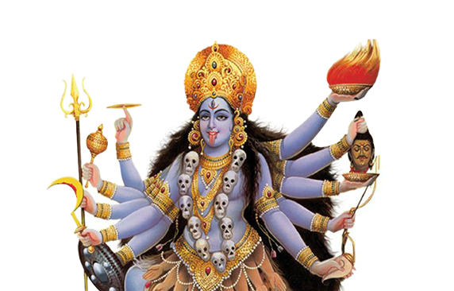

Kali Puja - Worship of Goddess Kali
Kali Puja: Worship of Goddess Kali
Kali Puja is a sacred Hindu ritual dedicated to Goddess Kali, the embodiment of power, destruction, and transformation. This puja is performed to seek her blessings for strength, protection, and the removal of negative energies.
What is Kali Puja?
Kali Puja is a powerful ritual in Hinduism dedicated to the worship of Goddess Kali, who symbolizes destruction, transformation, and liberation. Kali is believed to remove the darkness of ignorance and is revered as the force that protects the universe by destroying evil forces. Performing Kali Puja is considered auspicious for seeking her divine intervention and blessings for strength, protection, and wisdom.
Why Do We Perform Kali Puja?
- Protection from Evil: Kali Puja helps in removing negative energies, black magic, and evil influences from one's life.
- Strength and Courage: Worshipping Kali empowers the devotee with physical, mental, and emotional strength to face life's challenges.
- Transformation and Liberation: Kali is also the goddess of transformation, helping devotees break free from the cycles of ignorance and suffering.
- Spiritual Growth: Kali Puja fosters spiritual awareness, helping one walk on the righteous path.
- Victory over Adversities: Kali Puja is performed to seek victory over personal struggles, enemies, or any form of adversity.
Benefits of Kali Puja
- Protection from Negativity: Kali Puja shields the devotee from evil forces, negative energies, and harmful influences.
- Spiritual Transformation: The puja helps in personal transformation by fostering spiritual clarity and wisdom.
- Success and Victory: Kali Puja is believed to bring success in all endeavors and help overcome life's obstacles.
- Increased Strength: It provides physical and mental strength to cope with adversities and challenges.
- Healing: Kali Puja has healing benefits, especially in removing the emotional and spiritual burdens of the devotee.
How to Perform Kali Puja (Step-by-Step)
Kali Puja is traditionally performed at night, especially during the festival of Diwali or during the dark fortnight (Krishna Paksha) of the lunar month. Here's a step-by-step guide:
- Preparation: Set up a clean space or altar with an image or idol of Goddess Kali, red or black flowers, incense, a lamp (preferably ghee), and offerings such as sweets, fruits, and coconuts.
- Cleanse Yourself: Take a bath and wear clean clothes, preferably in dark colors like red or black, which are associated with Kali.
- Offer Flowers and Incense: Offer fresh flowers to Goddess Kali, especially red or black flowers, and light incense to purify the surroundings.
- Chant Kali Mantras: Recite powerful Kali mantras such as "Om Kreem Kali Ma" or "Om Kali Ma Namah" to invoke her blessings.
- Offer Prayers: Pray for protection, strength, spiritual growth, and victory over challenges.
- Conclude the Puja: Perform the Aarti (lighting a lamp and moving it in a circular motion) while chanting mantras to honor Kali.
- Prasad (Offering): Offer prasad, such as sweets, fruits, or coconuts, to Goddess Kali and distribute it among family members or devotees.
- Regular Practice: Performing Kali Puja regularly, especially during the dark nights, helps receive her full blessings for protection and success.
Conclusion
Kali Puja is a sacred and powerful ritual that brings strength, protection, and spiritual transformation to the devotee. By regularly performing Kali Puja, one can overcome obstacles, defeat negativity, and gain wisdom and prosperity under the divine guidance of Goddess Kali.